청소년상담사-3급(2교시)(구) (2014-03-29 기출문제)
1과목: 학습이론
1. 학습에 관한 설명으로 옳은 것을 모두 고른 것은?
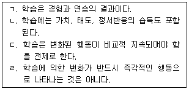
- ㄱ, ㄴ, ㄷ
- ㄱ, ㄴ, ㄹ
- ㄱ, ㄷ, ㄹ
- ㄴ, ㄷ, ㄹ
- ㄱ, ㄴ, ㄷ, ㄹ
(정답률: 알수없음)

2. 기능주의(functionalism) 학습이론에 관한 내용이 아닌 것은?
- 윌리엄 제임스(W. James)는 대표적인 기능주의 학습이론가이다.
- 인간의 의식은 하나의 통일체로 기능하며 요소로 환원될 수 없다.
- 인간의 의식을 이해하기 위해 내성법을 주로 사용하였다.
- 행동과 의식은 환경과의 관계에서 끊임없이 변화한다.
- 의식의 기능과 작용에 초점을 두었다.
(정답률: 알수없음)
3. 순행간섭(proactive interference)으로 설명할 수 있는 것은?
- 관심이 없는 정보일수록 기억하기가 어렵다.
- 중요한 정보일수록 기억하기가 어렵다.
- 너무 오랜만에 만난 친구의 이름을 기억하기 어렵다.
- 이미 암기한 단어 때문에 새로운 단어의 암기가 어렵다.
- 스페인어를 배우고 난 뒤, 전에 공부했던 영어가 혼동된다.
(정답률: 알수없음)
4. 외재적 동기와 내재적 동기에 관한 설명으로 옳은 것을 모두 고른 것은?
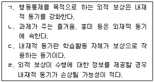
- ㄱ, ㄴ
- ㄱ, ㄷ
- ㄷ, ㄹ
- ㄴ, ㄷ, ㄹ
- ㄱ, ㄴ, ㄷ, ㄹ
(정답률: 알수없음)
5. 학습의 전이에 관한 내용으로 옳은 것을 모두 고른 것은?
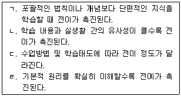
- ㄱ, ㄴ
- ㄷ, ㄹ
- ㄱ, ㄷ, ㄹ
- ㄴ, ㄷ, ㄹ
- ㄱ, ㄴ, ㄷ, ㄹ
(정답률: 알수없음)
6. 학습자의 정서에 관한 설명으로 옳지 않은 것은?
- 특성불안이란 특정 상황에서 일시적으로 나타나는 불안이다.
- 각성수준이 지나치게 높을 경우 불안이 나타날 수 있다.
- 과제의 성격에 따라 최적의 각성수준이 다를 수 있다.
- 시험불안의 정도는 시험상황에 대한 학습자의 평가에 따라 달라진다.
- 과제 난이도에 따라 불안수준이 과제수행에 미치는 결과가 다를 수 있다.
(정답률: 알수없음)
7. 학습동기에 관한 설명으로 옳은 것은?
- 과제의 효용가치가 높을수록 학습동기가 낮아진다.
- 과제의 내재적 가치가 높을수록 학습동기가 낮아진다.
- 자신이 선택한 과제보다 부과된 과제를 수행할 때 학습동기가 낮아진다.
- 자신의 유능감에 대한 평가가 높을수록 학습동기가 낮아진다.
- 학습내용이 자신에게 중요하다고 생각할수록 학습동기가 낮아진다.
(정답률: 알수없음)
8. 구성주의 학습이론에 관한 설명으로 옳지 않은 것은?
- 수업의 중심은 학생이다.
- 지식은 절대적이며 외적 실재와 일치한다.
- 강의식보다는 문제중심, 토의식, 발견학습의 교수방법을 강조한다.
- 학습이란 개인적인 경험에 근거해서 의미를 개발하는 능동적인 과정이다.
- 개인이 경험하는 세계는 자신에 의해 의미가 부여되고 구성된다.
(정답률: 알수없음)
9. 성취목표지향성 유형 중 수행목표(performance goal)를 가진 학습자의 특징으로 옳은 것은?
- 타인의 인정보다는 자신의 성장을 위해 동기화된다.
- 타인과의 상대적 비교를 기준으로 성공여부를 판단한다.
- 실패할 가능성에도 불구하고 새로운 내용이나 과제에 도전하는 것을 목표로 한다.
- 타인의 수행에 관심을 두기보다는 스스로 얼마나 많은 것을 배울 수 있는가에 관심이 있다.
- 학습에서의 실수나 실패도 배움의 과정으로 받아들이는 개방적인 태도를 가진다.
(정답률: 알수없음)
10. 행동주의와 인지주의 학습이론에 관한 설명으로 옳지 않은 것은?
- 행동주의는 형태주의 심리학에 기초한다.
- 행동주의에서 학습 원리는 자극과 반응의 관계성에 기초한다.
- 행동주의는 관찰 가능한 행동을 연구주제로 한다.
- 인지주의는 관찰된 행동의 변화보다 행동 잠재력의 변화에 관심을 둔다.
- 인지주의는 사고, 언어, 문제해결과 같은 복잡한 지적 과정을 강조한다.
(정답률: 알수없음)
11. 반두라(Bandura)의 관찰학습에 관한 설명으로 옳지 않은 것은?
- 행동에 강화가 수반되어야 학습이 일어난다.
- 정보를 전달하는 것이면 어떤 것도 모델이 된다.
- 관찰한 것을 반드시 모방하게 되는 것은 아니다.
- 모델의 신뢰성(credibility)은 관찰학습에 도움을 준다.
- 행동, 환경, 개인은 서로 영향을 미치며 상호작용 한다.
(정답률: 알수없음)
12. 사회인지이론에서 제시한 자기효능감(self-efficacy)에 관한 설명으로 옳지 않은 것은?
- 자기효능감은 노력의 정도에 영향을 줄 수 있다.
- 자기효능감이 높으면 새로운 과제에 보다 적극적으로 도전하는 경향이 있다.
- 자기효능감이 높아도 결과 기대(outcome expectation)는 낮을 수 있다.
- 자기효능감은 특정 과제를 수행할 수 있는 자신의 능력에 대한 믿음이다.
- 자기효능감은 자신의 가치, 속성, 태도 등에 대한 전반적인 자기 지각이다.
(정답률: 64%)
13. 다음 사례들이 공통적으로 설명하고 있는 사회인지이론의 자기조절(self-regulation) 전략은?
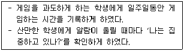
- 자기 지시
- 자기 점검
- 자기 강화
- 재구조화
- 자기부여 자극통제
(정답률: 알수없음)
14. 사회인지이론에서 제시한 모델링의 기능으로 볼 수 없는 것은?
- 반응촉진
- 관찰학습
- 자발적 회복
- 억제
- 탈억제
(정답률: 알수없음)
15. 초인지(metacognition)에 관한 설명으로 옳은 것은?
- 대표적인 초인지 학습전략은 '밑줄 긋기'이다.
- 초인지의 발달은 생후 1년 후부터 꾸준히 진행된다.
- 성인이 되면 과제를 해결할 때 초인지를 항상 사용한다.
- 과제 수행에 어려움이 있을 때 자신의 전략을 점검한다.
- 어떤 지식이나 정보를 반복적으로 사용하는 것이다.
(정답률: 알수없음)
16. 감각등록기(sensory register)에 관한 설명으로 옳은 것은?
- 정보의 저장 용량이 매우 제한되어 있다.
- 정보가 일단 유입되면 영구적으로 기억된다.
- 이미 알고 있는 정보와 연결되어야 저장된다.
- 정보의 대부분을 청각적으로 부호화한다.
- 정보를 작업기억(working memory)으로 넘기려면 주의를 기울여야 한다.
(정답률: 알수없음)
17. 인출과 망각에 영향을 주는 요인을 모두 고른 것은?
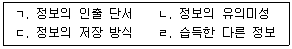
- ㄱ, ㄴ
- ㄴ, ㄷ
- ㄱ, ㄴ, ㄷ
- ㄱ, ㄷ, ㄹ
- ㄱ, ㄴ, ㄷ, ㄹ
(정답률: 알수없음)
18. 절차적 지식(procedural knowledge)에 관한 설명으로 옳지 않은 것은?
- 일화 기억은 절차적 지식의 대표적인 형태이다.
- 조건적 지식(conditional knowledge)을 포함하고 있다.
- '어떻게 하는 것'과 관련된 지식이다.
- 언어적 부호와 이미지로 저장될 수 있다.
- 수학문제를 풀거나 과학실험을 하는 과정에 활용된다.
(정답률: 알수없음)
19. 다음 설명에 해당되는 인지과정은?
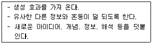
- 부호화
- 정교화
- 활성화
- 유지시연
- 내적 조직화
(정답률: 80%)
20. '애트킨슨과 쉬프린(Atkinson & Shiffrin)의 이중기억모형'과 '크레이크와 로크하트(Craik & Lockhart)의 정보처리의 수준모형(levels of processing model)'에 관한 설명으로 옳은 것을 모두 고른 것은?
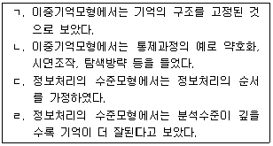
- ㄱ, ㄴ
- ㄴ, ㄹ
- ㄱ, ㄴ, ㄹ
- ㄱ, ㄷ, ㄹ
- ㄴ, ㄷ, ㄹ
(정답률: 알수없음)
21. 다음 사례에서 공통적으로 나타나는 고전적 조건형성이론의 자극 연결방식은?
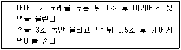
- 지연 조건형성
- 동시 조건형성
- 강화 조건형성
- 흔적 조건형성
- 역향 조건형성
(정답률: 알수없음)
22. 다음 사례에서 A양의 정서적 변화와 관련된 행동주의의 개념이 아닌 것은?
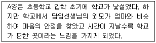
- 무조건 자극
- 중성 자극
- 행동 연쇄
- 조건 자극
- 조건 반응
(정답률: 알수없음)
23. 장기기억의 형성에 가장 직접적인 영향을 미치는 신경전달물질은?
- 도파민(dopamine)
- 아드레날린(adrenaline)
- 아세틸콜린(acetylcholine)
- 페닐알라닌(phenylalanine)
- 노르에피네프린(norepinephrine)
(정답률: 알수없음)
24. 행동주의에서 강화가 제공되지 않아도 학습이 일어나는 현상을 의미하는 개념은?
- 조합법칙
- 지각학습
- 음음효과
- 대비효과
- 은밀한 강화
(정답률: 알수없음)
25. K교사는 학습내용의 파지를 촉진하기 위하여 새로운 학습내용을 설명한 후 곧바로 학생들이 이미 알고 있는 것과의 관계를 설명한다. K교사가 활용한 행동주의 원리는?
- 반복의 원리
- 강도의 원리
- 소거의 원리
- 근접성의 원리
- 계속성의 원리
(정답률: 90%)
26. 강화와 벌의 유형별 사례가 잘못 연결된 것은?
- 1차적 강화 - 학급 평균 성적이 좋을 경우 학생 전원에게 피자를 사준다.
- 2차적 강화 - 응답을 잘 한 학생에게 미소를 지어준다.
- 부적 강화 - 숙제를 잘 한 학생은 기합에서 제외시켜 준다.
- 1차적 벌 - 성적이 낮은 학생에게 추가 숙제를 내준다.
- 2차적 벌 - 지각을 한 학생에게 교실 청소를 시킨다.
(정답률: 알수없음)
27. 강화의 효과를 증진시키기 위한 방법을 모두 고른 것은?
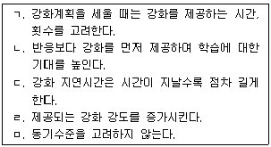
- ㄱ, ㄹ
- ㄴ, ㄷ
- ㄱ, ㄴ, ㄹ
- ㄴ, ㄷ, ㅁ
- ㄷ, ㄹ, ㅁ
(정답률: 알수없음)
28. 파블로프(Pavlov)의 고전적 조건형성이론이 적용된 사례가 아닌 것은?
- 유명배우를 모델로 한 제품의 광고
- 조건정서반응을 통한 공포의 치료
- 조건정서반응을 통한 편견의 고착
- 혐오와의 연계를 통한 성도착증의 치료
- 면역훈련을 통한 학습된 무력감의 해소
(정답률: 알수없음)
29. 다음의 각 사례에서 사용된 강화계획을 바르게 연결한 것은?
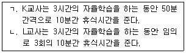
- ㄱ : 고정간격 강화계획, ㄴ : 변동간격 강화계획
- ㄱ : 고정비율 강화계획, ㄴ : 고정간격 강화계획
- ㄱ : 고정간격 강화계획, ㄴ : 고정비율 강화계획
- ㄱ : 고정비율 강화계획, ㄴ : 변동비율 강화계획
- ㄱ : 변동간격 강화계획, ㄴ : 변동비율 강화계획
(정답률: 60%)
30. 좌뇌와 우뇌의 기능적 속성에 관한 설명으로 옳지 않은 것은?
- 좌뇌와 우뇌 간에는 정보의 전이가 가능하다.
- 좌뇌보다 우뇌가 언어 정보를 처리하는데 더 유리하다.
- 우뇌 손상이 있을 경우 주의나 지각이 어려워진다.
- 뇌량(corpus callosum)의 절단은 양반구의 정보 전이를 막을 수 있다.
- 좌뇌 손상에 비해 우뇌 손상이 있을 경우 무시증후군이 나타날 확률이 높다.
(정답률: 알수없음)
2과목: 청소년이해론
31. 청소년기 자아개념 발달에 관한 설명으로 옳은 것을 모두 고른 것은?
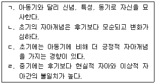
- ㄱ, ㄷ
- ㄴ, ㄹ,
- ㄱ, ㄴ, ㄹ
- ㄴ, ㄷ, ㄹ
- ㄱ, ㄴ, ㄷ, ㄹ
(정답률: 70%)
32. 청소년기의 혼란과 갈등이 사춘기의 보편적 산물이 아니라 문화적 맥락에 따라 다를 수 있다고 주장한 학자는?
- 미드(Mead)
- 다윈(Darwin)
- 에릭슨(Erikson)
- 설리반(Sullivan)
- 프로이트(Freud)
(정답률: 80%)
33. 스탠리 홀(S. Hall)의 인간발달에 관한 주장을 모두 고른 것은?
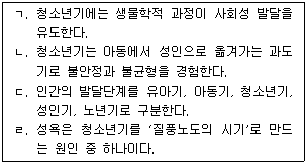
- ㄱ, ㄴ, ㄷ
- ㄱ, ㄴ, ㄹ
- ㄱ, ㄷ, ㄹ
- ㄴ, ㄷ, ㄹ
- ㄱ, ㄴ, ㄷ, ㄹ
(정답률: 알수없음)
34. 청소년기 신체발달에 관한 설명으로 옳지 않은 것은?
- 청소년기 성장급등 시기는 여자가 남자보다 빠르다.
- 남성의 2차 성징은 프로게스테론의 영향으로 나타난다.
- 체력과 지구력이 최고조에 달한다.
- 여성의 성적 성숙의 뚜렷한 변화는 초경의 시작이다.
- 급격히 증가하는 성호르몬은 생식기관의 극적인 성장을 초래한다.
(정답률: 알수없음)
35. 청소년기 자기중심성에 관한 설명으로 옳지 않은 것은?
- 청소년기의 보편적 현상이다.
- 엘킨드(Elkind)는 초보적인 형식적ㆍ조작적 사고의 결과로 보았다.
- 사회적 상호작용을 통해 타인의 관심사와 경험을 이해하게 되면서 사라진다.
- 자기도취적이고 요란한 옷차림을 하며 눈에 띄고 싶은 것은 '개인적 우화' 현상이다.
- 타인들이 자신을 열광적으로 바라보고 있다고 생각하는 것은 '상상의 청중' 현상이다.
(정답률: 70%)
36. 성역할 사회화에 대한 전통적인 견해가 성별의 양극개념을 초래한다고 보는 성역할 발달이론은?
- 성도식이론
- 정신분석이론
- 인지발달이론
- 사회학습이론
- 성역할 초월이론
(정답률: 50%)
37. 청소년기 정서의 특징에 관한 설명으로 옳지 않은 것은?
- 격렬하고 쉽게 동요하는 경향이 있다.
- 정서표현이 아동기보다 더 직접적이고 일시적이다.
- 신체ㆍ생리적 변화는 강렬한 정서적 불안정성을 유발한다.
- 심리ㆍ사회적 압박은 강한 정서적 불만이나 갈등을 유발한다.
- 정서를 자극하는 것은 부모와의 갈등 등 주로 대인관계 문제이다.
(정답률: 알수없음)
38. 청소년 또래집단의 동조행동에 관한 설명으로 옳지 않은 것은?
- 청소년의 언어, 가치관 등 모든 면에 영향을 미친다.
- 부정적인 동조행동으로 속어나 비어 사용 등이 있다.
- 동조행동에 대한 또래집단의 압력은 청소년기에 가장 강력하다.
- 또래집단 내에 높은 지위에 있거나 자신감 있는 청소년은 동조행동의 영향을 덜 받는다.
- 부모와 또래집단의 가치가 상충될 경우 청소년은 부모의 영향을 더 크게 받는다.
(정답률: 80%)
39. 청소년의 자아정체감 성취를 지연시키는 요인이 아닌 것은?
- 역할실험 기회의 증가
- 선택할 수 있는 대안의 증가
- 취업을 위한 준비기간의 연장
- 의사결정할 수 있는 영역의 다양화
- 아동기와 성인기의 문화적 불연속성의 증가
(정답률: 46%)
40. 콜버그(Kohlberg)의 도덕발달이론에서 집단따돌림 가해자가 무서워서 그에 동조하는 청소년에게 해당되는 단계는?
- 벌과 복종 지향 단계
- 도구적 상대주의 지향 단계
- 착한 아이 지향 단계
- 법과 질서 지향 단계
- 사회계약 지향 단계
(정답률: 알수없음)
41. 청소년기본법상 용어의 정의 중, “청소년이 정상적인 삶을 영위할 수 있는 기본적인 여건을 조성하고 조화롭게 성장ㆍ발달할 수 있도록 제공되는 사회적ㆍ경제적 지원”은?
- 청소년상담
- 청소년보호
- 청소년복지
- 청소년문화
- 청소년활동
(정답률: 알수없음)
42. 청소년문화의 특성으로 옳은 것을 모두 고른 것은?
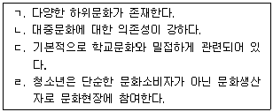
- ㄱ, ㄴ
- ㄱ, ㄷ
- ㄴ, ㄹ
- ㄴ, ㄷ, ㄹ
- ㄱ, ㄴ, ㄷ, ㄹ
(정답률: 82%)
43. 청소년쉼터에 관한 내용으로 옳은 것을 모두 고른 것은?
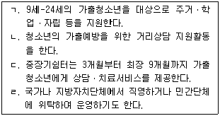
- ㄱ, ㄴ
- ㄱ, ㄷ
- ㄴ, ㄹ
- ㄱ, ㄴ, ㄹ
- ㄴ, ㄷ, ㄹ
(정답률: 알수없음)
44. 청소년방과후아카데미에 관한 내용으로 옳지 않은 것은?(관련 규정 개정전 문제로 여기서는 기존 정답인 3번을 누르면 정답 처리됩니다. 자세한 내용은 해설을 참고하세요.)
- 시행은 여성가족부와 지방자치단체가 공동 운영한다.
- 지원대상은 원칙적으로 초등학교 4학년부터 중학교 2학년까지이다.
- 아동복지법에 따른 시설로 체험활동ㆍ급식ㆍ상담 등을 지원한다.
- 실시장소는 청소년수련관, 청소년문화의집 등을 활용한다.
- 취약계층 등 방과후 홀로 시간을 보내는 청소년들에 대한 건전한 성장지원을 목적으로 한다.
(정답률: 알수없음)
45. 청소년복지 지원법상 학습ㆍ정서ㆍ행동상의 장애를 가진 청소년을 지원하기 위해 설치한 거주형 청소년치료재활센터는?
- 하자센터
- 청소년희망센터
- 인터넷치유학교
- 무지개청소년센터
- 국립중앙청소년디딤센터
(정답률: 알수없음)
46. 청소년복지 지원법상 청소년증에 관한 내용으로 옳지 않은 것은?
- 발급에 필요한 사항은 여성가족부령으로 정한다.
- 다른 사람에게 양도해서는 아니 된다.
- 9세 이상 19세 이하의 청소년에게 발급할 수 있다.
- 특별자치도지사, 또는 시장ㆍ군수ㆍ구청장이 발급할 수 있다.
- 누구든지 동일한 명칭의 증표를 제작해서는 아니 된다.
(정답률: 알수없음)
47. 우리사회 가족형태 변화의 특징으로 옳지 않은 것은?
- 자녀수의 감소
- 가구수의 감소
- 핵가족의 증가
- 재혼가족의 증가
- 한부모가족의 증가
(정답률: 알수없음)
48. 문화의 개념을 역사적 변천 순서에 따라 바르게 나열한 것은?
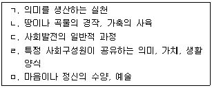
- ㄱ - ㄴ - ㄹ - ㅁ - ㄷ
- ㄱ - ㄷ - ㄴ - ㄹ - ㅁ
- ㄴ - ㅁ - ㄷ - ㄱ - ㄹ
- ㄴ - ㅁ - ㄷ - ㄹ - ㄱ
- ㄷ - ㄴ - ㄱ - ㅁ - ㄹ
(정답률: 알수없음)
49. 지역사회 위기청소년 지원을 위해 원스톱으로 상담ㆍ보호ㆍ의료ㆍ자립 등 맞춤형 서비스를 제공하는 여성가족부 청소년복지정책은?
- 드림스타트
- 청소년동반자
- 위스쿨
- 아이윌센터
- 지역사회청소년통합지원체계
(정답률: 알수없음)
50. 다음에서 설명하는 청소년 관련 사업은?
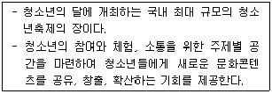
- 청소년문화존
- 청소년특별회의
- 여수국제청소년축제
- 대한민국청소년박람회
- 국제청소년성취포상제
(정답률: 70%)
51. 청소년자살의 특징으로 옳지 않은 것은?
- 모방자살이 많다.
- 학교생활과 관련된 자살이 많다.
- 친구와의 동일시로 인한 집단자살이 많다.
- 충동적 자살보다 오랫동안 계획한 자살이 많다.
- 가정불화를 자신 탓으로 생각하는 죄책감으로 인한 자살이 많다.
(정답률: 알수없음)
52. 청소년가출에 관한 설명으로 옳지 않은 것은?
- 가출 시작시기가 저연령화되고 있다.
- 상습적 가출이 감소하고 있다.
- 가출청소년 자살시도가 일반청소년에 비해 높다.
- 가출청소년은 문제행동을 일으킬 가능성이 높다.
- 가정ㆍ학교에서 문제가 없는 일반청소년의 가출이 증가하고 있다.
(정답률: 알수없음)
53. 청소년 보호법상 인터넷게임 제공자의 인터넷게임 제공금지 대상 연령과 시간은?
- 16세 미만, 오전 0시부터 오전 6시까지
- 16세 미만, 오전 1시부터 오전 7시까지
- 17세 미만, 오전 0시부터 오전 6시까지
- 17세 미만, 오전 1시부터 오전 7시까지
- 18세 미만, 오전 0시부터 오전 6시까지
(정답률: 60%)
54. 학교폭력 신고 대표전화 번호는?
- 115
- 116
- 117
- 118
- 1318
(정답률: 알수없음)
55. 청소년유해약물과 유해업소 등을 규제하기 위한 목적으로 제정된 법률은?
- 소년법
- 청소년 보호법
- 아동ㆍ청소년의 성보호에 관한 법률
- 청소년기본법
- 청소년복지 지원법
(정답률: 64%)
56. 소년법상 소년의 연령은?
- 16세 미만의 자
- 17세 미만의 자
- 18세 미만의 자
- 19세 미만의 자
- 20세 미만의 자
(정답률: 알수없음)
57. 하트(Hart)의 청소년참여 사다리 모델(the ladder of participation model)에 관한 설명으로 옳은 것을 모두 고른 것은?
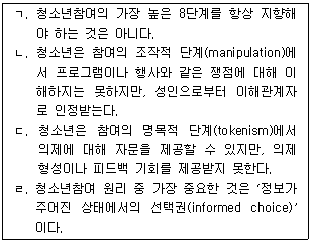
- ㄱ, ㄴ, ㄷ
- ㄱ, ㄴ, ㄹ
- ㄱ, ㄷ, ㄹ
- ㄴ, ㄷ, ㄹ
- ㄱ, ㄴ, ㄷ, ㄹ
(정답률: 알수없음)
58. 청소년비행 중 지위비행에 해당하지 않는 것은?
- 흡연
- 음주
- 유흥장 출입
- 관람불가 영화보기
- 물건 훔치기
(정답률: 73%)
59. 청소년비행에 관한 낙인이론(labeling theory)의 관점에 해당하는 것을 모두 고른 것은?
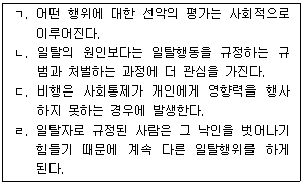
- ㄱ, ㄴ, ㄷ
- ㄱ, ㄴ, ㄹ
- ㄱ, ㄷ, ㄹ
- ㄴ, ㄷ, ㄹ
- ㄱ, ㄴ, ㄷ, ㄹ
(정답률: 60%)
60. 청소년의 약물남용에 관한 설명으로 옳지 않은 것은?
- 일단 약물을 남용하게 되면 성인보다 느린 속도로 약물중독에 이르게 된다.
- 장기적으로 볼 때 정신질환 등 각종 질환을 일으킬 수 있다.
- 내성이 생김에 따라 사용하는 약물의 용량이 증가한다.
- 낮은 자존감, 심리적 스트레스와 관련성이 높다.
- 한 가지 약물에서 시작하여 여러 가지 약물을 복합적으로 남용하게 된다.
(정답률: 알수없음)
3과목: 청소년수련활동론
61. 현행 교육과정에서 창의적 체험활동 4대 영역이 아닌 것은?
- 자율활동
- 동아리활동
- 봉사활동
- 집단활동
- 진로활동
(정답률: 알수없음)
62. 청소년활동 학습몰입에 관한 설명으로 옳지 않은 것은?
- 자신이 학습하고자 하는 목적의식을 갖고 있다.
- 학습과정의 결과에 대한 피드백을 얻게 된다.
- 자신이 참여하는 활동과제에 관심이 집중되어 있다.
- 행위와 인식의 일체감을 경험하게 된다.
- 양적 시간개념을 명확하게 인식하고 있다.
(정답률: 알수없음)
63. 다음에서 설명하는 청소년지도방법의 원리는?
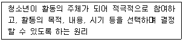
- 창의성의 원리
- 다양성의 원리
- 협동성의 원리
- 활동중심의 원리
- 자기주도성의 원리
(정답률: 알수없음)
64. 청소년활동 프로그램의 구성 형태에 관한 설명으로 옳은 것은?
- 연속 프로그램은 하나의 주제에서 세분화된 여러 개의 유사 활동이 체계적으로 연결된다.
- 통합 프로그램은 하나의 주제에서 여러 개의 활동이 나뉘어져 일정한 순서에 따라 연결된다.
- 종합 프로그램은 하나의 주제에 맞추어 여러 영역의 활동이 연관성 있게 전개된다.
- 단위 프로그램은 여러 개의 활동이 단일 목표를 달성하기 위하여 체계적으로 구성된다.
- 개별 프로그램은 하나의 주제를 바탕으로 단위 활동이 이루어진다.
(정답률: 알수없음)
65. 소집단 대상 지도기법을 모두 고른 것은?
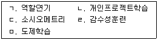
- ㄱ, ㄴ, ㄹ
- ㄱ, ㄷ, ㄹ
- ㄱ, ㄷ, ㅁ
- ㄴ, ㄷ, ㅁ
- ㄴ, ㄹ, ㅁ
(정답률: 알수없음)
66. 브레인스토밍 지도법에 관한 내용을 모두 고른 것은?
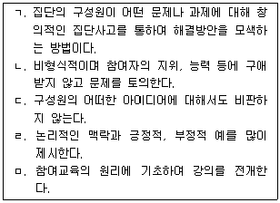
- ㄱ, ㄴ, ㄷ
- ㄱ, ㄴ, ㄹ
- ㄱ, ㄷ, ㅁ
- ㄴ, ㄷ, ㄹ
- ㄷ, ㄹ, ㅁ
(정답률: 0%)
67. 청소년활동의 핵심 구성요소로 보기 어려운 것은?
- 교구재
- 지도자
- 청소년
- 프로그램
- 활동터전
(정답률: 20%)
68. 청소년활동의 지도 원리로 보기 어려운 것은?
- 전인성
- 관리성
- 다양성
- 융통성
- 자발성
(정답률: 알수없음)
69. 콜브(Kolb)가 제시한 체험학습의 4가지 순환적 원리를 순서대로 바르게 나열한 것은?
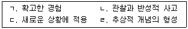
- ㄱ - ㄴ - ㄷ - ㄹ
- ㄱ - ㄴ - ㄹ - ㄷ
- ㄴ - ㄱ - ㄷ - ㄹ
- ㄷ - ㄹ - ㄱ - ㄴ
- ㄹ - ㄷ - ㄴ - ㄱ
(정답률: 알수없음)
70. 지역사회 중심의 청소년 프로그램 개발시 고려해야 할 내용으로 옳지 않은 것은?
- 청소년과 가족, 지역사회의 다양한 문화적 상황을 고려해야 한다.
- 청소년의 안전보장과 접근성이 용이해야 한다.
- 청소년보다 지도자의 전문성이 고려된 프로그램을 개발해야 한다.
- 청소년지도자를 위한 교육ㆍ연수 프로그램이 제공되어야 한다.
- 지역사회의 인적ㆍ물적 자원을 적절히 활용해야 한다.
(정답률: 알수없음)
71. 청소년활동 프로그램의 특성으로 옳지 않은 것은?
- 순환적이다.
- 도구적이다.
- 변동적이다.
- 미래지향적이다.
- 결과지향적이다.
(정답률: 알수없음)
72. 청소년활동 프로그램 개발시 적용되는 선형모형에 관한 내용이 아닌 것은?
- 개발 단계별 지도자의 직무를 파악하는데 효과적이다.
- 개발 단계별 순차적 논리성이 강조된다.
- 개발 경험이 적은 초보자에게 효과적이다.
- 개발이 완료되면 이전 단계로 되돌려 전면 수정하기 어렵다.
- 개발 단계별 구성요소에 대한 의사결정 과정이 강조된다.
(정답률: 알수없음)
73. 청소년활동 프로그램의 단계별 평가 유형에 관한 설명으로 옳은 것은?
- 요구평가는 프로그램의 제한점이나 성공 가능성 여부에 대한 평가이다.
- 타당성평가는 프로그램 실행시 계획과 현실 사이의 차이점에 대한 평가이다.
- 경과평가는 프로그램의 목적과 목표가 잘 결합되고 효과적인가에 대한 평가이다.
- 과정평가는 프로그램 개발에 필요한 재원 산출에 대한 평가이다.
- 형성평가는 프로그램을 진행하면서 수행하는 지도방법에 대한 평가이다.
(정답률: 알수없음)
74. 청소년활동 프로그램의 평가 과정을 순서대로 바르게 나열한 것은?
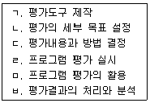
- ㄱ - ㄴ - ㄷ - ㄹ - ㅂ - ㅁ
- ㄴ - ㄷ - ㄱ - ㄹ - ㅂ - ㅁ
- ㄴ - ㄷ - ㄱ - ㄹ - ㅁ - ㅂ
- ㄷ - ㄱ - ㄴ - ㄹ - ㅂ - ㅁ
- ㄷ - ㄴ - ㄱ - ㄹ - ㅁ - ㅂ
(정답률: 알수없음)
75. 청소년활동진흥법상 수련시설의 설치ㆍ운영에 관한 설명으로 옳은 것은?
- 청소년수련관은 읍ㆍ면ㆍ동에 1개소 이상 설치ㆍ운영하여야 한다.
- 청소년문화의집은 시ㆍ군ㆍ구에 1개소 이상 설치ㆍ운영하여야 한다.
- 청소년수련시설의 설치 허가권자는 여성가족부장관이다.
- 시ㆍ도지사 및 시장ㆍ군수ㆍ구청장은 청소년특화시설을 설치ㆍ운영할 수 있다.
- 국가는 수련시설의 설치ㆍ운영에 필요한 경비를 보조해야 한다.
(정답률: 알수없음)
76. 청소년활동진흥법상 다음에서 설명하는 청소년수련시설이 바르게 연결된 것은?
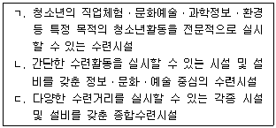
- ㄱ : 청소년특화시설, ㄴ : 청소년야영장, ㄷ : 청소년수련원
- ㄱ : 청소년수련원, ㄴ : 청소년야영장, ㄷ : 청소년수련관
- ㄱ : 청소년특화시설, ㄴ : 청소년문화의집, ㄷ : 청소년수련관
- ㄱ : 청소년문화의집, ㄴ : 청소년특화시설, ㄷ : 청소년수련원
- ㄱ : 청소년수련관, ㄴ : 청소년특화시설, ㄷ : 청소년야영장
(정답률: 알수없음)
77. 청소년기본법상 수용인원이 500명 이하인 청소년수련관에 배치해야 하는 급별 최소 청소년지도사 수는?
- 1급 1명, 2급 1명, 3급 2명
- 1급 1명, 2급 2명, 3급 3명
- 1급 1명, 2급 3명, 3급 3명
- 1급 2명, 2급 2명, 3급 2명
- 1급 2명, 2급 3명, 3급 3명
(정답률: 20%)
78. 청소년활동 프로그램의 실행 과정에 영향을 미치는 환경적 요인이 아닌 것은?
- 청소년수련시설의 접근성
- 청소년보호자의 의식
- 청소년집단의 규모
- 청소년의 자발성
- 청소년지도자의 역할
(정답률: 알수없음)
79. 청소년활동진흥법령상 청소년운영위원회의 구성ㆍ운영에 관한 설명으로 옳지 않은 것은?
- 위원의 임기는 2년이며 연임할 수 있다.
- 청소년운영위원회는 10인 이상 20인 이내의 청소년으로 구성해야 한다.
- 국가 및 지방자치단체는 예산의 범위 안에서 청소년운영위원회의 운영에 필요한 경비를 지원할 수 있다.
- 위원장은 필요시 회의를 소집하며, 그 의장이 된다.
- 위원장은 위원 중에서 호선 한다.
(정답률: 알수없음)
80. 공공 청소년수련시설 운영의 활성화 요건으로 보기 어려운 것은?
- 마케팅 대상 집단을 명확히 해야 한다.
- 지역사회 중심의 운영 전략을 수립해야 한다.
- 지역사회 연계를 강화해야 한다.
- 지역사회 변화의 견인차 역할을 수행해야 한다.
- 다양한 수익사업을 확대해야 한다.
(정답률: 알수없음)
81. 청소년활동진흥법령상 청소년수련활동인증위원회의 구성ㆍ운영에 관한 설명으로 옳은 것은?
- 청소년수련활동인증위원회는 20명 이내의 위원으로 구성한다.
- 한국청소년활동진흥원 이사장은 인증위원이 된다.
- 청소년수련활동인증위원회 위원의 임기는 2년이며 연임할 수 있다.
- 한국청소년활동진흥원 이사장은 청소년활동에 관한 지식과 경험이 풍부한 사람 중에서 인증위원을 위촉할 수 있다.
- 청소년수련활동인증위원회는 위원장 1인과 부위원장 2인을 두며 위원장은 위원 중에서 호선한다.
(정답률: 알수없음)
82. 청소년수련활동의 관점에서 집단역동(group dynamics)에 관한 설명은?
- 청소년지도자가 공유하고 있는 목표를 성취하는 것이다.
- 집단 내에서 보다 효과적인 상호작용을 통해 집단의 발전과 생산성을 높여주는 것이다.
- 청소년지도자와 청소년 간의 일방향적인 의사소통을 하는 과정이다.
- 청소년지도자의 행동변화를 위해 환경을 적절하게 조성해 주는 과정이다.
- 청소년이 개인 및 지역사회 문제에 관심을 갖도록 지도하는 것이다.
(정답률: 20%)
83. 국제청소년성취포상제 활동 영역이 아닌 것은?
- 탐험활동
- 봉사활동
- 자기개발활동
- 신체단련활동
- 체험활동
(정답률: 알수없음)
84. 시ㆍ군ㆍ구 등의 지방자치단체가 청소년정책과 관련한 청소년 의견을 수렴하기 위하여 설치ㆍ운영하고 있는 청소년기구는?
- 청소년복지위원회
- 청소년보호위원회
- 청소년참여위원회
- 청소년특별위원회
- 청소년활동위원회
(정답률: 알수없음)
85. 생활권 주변에서 청소년들이 주체가 되어 기획하고 진행하며, 다양한 문화ㆍ예술ㆍ놀이체험의 장으로써 운영되는 사업은?
- 청소년두드림존
- 청소년문화기획단
- 청소년문화존
- 청소년문화포럼
- 청소년문화데이
(정답률: 알수없음)
86. 청소년기본법령상 청소년특별회의에 관한 설명으로 옳지 않은 것은?
- 2년마다 개최하여야 한다.
- 참석대상과 운영방법 등의 세부사항은 대통령령으로 정한다.
- 여성가족부장관은 회의참석 대상을 정할 때 성별ㆍ연령별ㆍ지역별로 각각 전체 청소년을 대표할 수 있도록 노력해야 한다.
- 특별시ㆍ광역시ㆍ도ㆍ특별자치도 단위의 지역회의를 개최한 후에 전국단위의 회의를 개최하여야 한다.
- 청소년분야의 전문가와 청소년이 참여한다.
(정답률: 알수없음)
87. 청소년수련활동인증제도의 인증수련활동 영역 분류체계에 해당하지 않는 것은?
- 교류활동
- 과학정보활동
- 봉사활동
- 경제교육활동
- 환경보존활동
(정답률: 알수없음)
88. 청소년단체 및 수련시설에 관한 설명으로 옳지 않은 것은?
- 청소년단체 상호간의 교류ㆍ협력 등을 위하여 한국청소년단체협의회를 두고 있다.
- 청소년단체는 청소년기본법상 일부 수익사업을 할 수 있다.
- 청소년수련시설의 운영ㆍ발전을 위하여 한국청소년수련시설협회를 두고 있다.
- 청소년이용시설은 과학관, 청소년직업체험센터, 청소년성문화센터 등이 있다.
- 청소년수련시설 건립시 타당성 사전검토를 위하여 설계사항의 심의과정에 청소년이 참여할 수 있다.
(정답률: 10%)
89. 청소년수련활동인증제도에 관한 설명으로 옳지 않은 것은?
- 청소년수련활동인증위원회는 청소년활동 전문가 중에서 인증심사원을 선발하여 활용할 수 있다.
- 청소년수련활동인증위원회가 인증을 요청받은 때에는 인증기준에 따라 심사하고, 그 결과를 통지하여야 한다.
- 국가는 청소년수련활동인증제도를 운영하기 위하여 청소년수련활동인증위원회를 한국청소년활동진흥원에 설치ㆍ운영하여야 한다.
- 청소년수련활동인증위원회의 구성ㆍ운영, 기록유지 및 관리 등에 관해 필요한 사항은 대통령령으로 정한다.
- 인증수련활동을 실시한 시설 및 개인, 법인ㆍ단체는 그 결과를 인증수련활동이 끝난 후 10일 이내에 인증위원회에 통보하여야 한다.
(정답률: 알수없음)
90. 청소년활동진흥법령상 인증수련활동의 기록 유지ㆍ관리 등에 관한 내용이다. ( )에 들어갈 내용은?(관련 규정 개정전 문제로 여기서는 기존 정답인 3번을 누르면 정답 처리됩니다. 자세한 내용은 해설을 참고하세요.)
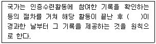
- 10일
- 20일
- 30일
- 40일
- 50일
(정답률: 알수없음)
- ㄴ: 학습의 중간 단계로, 기초 단계를 바탕으로 좀 더 복잡한 문제나 개념을 이해하고 응용하는 단계
- ㄷ: 학습의 마지막 단계로, 이전 단계에서 습득한 지식과 기술을 바탕으로 새로운 문제를 해결하거나 창의적인 아이디어를 도출하는 단계
- ㄹ: 학습의 평가 단계로, 학습한 내용을 정리하고 평가하여 자신의 학습 성과를 파악하는 단계